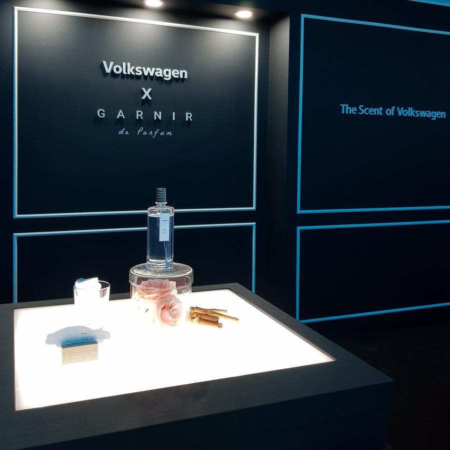
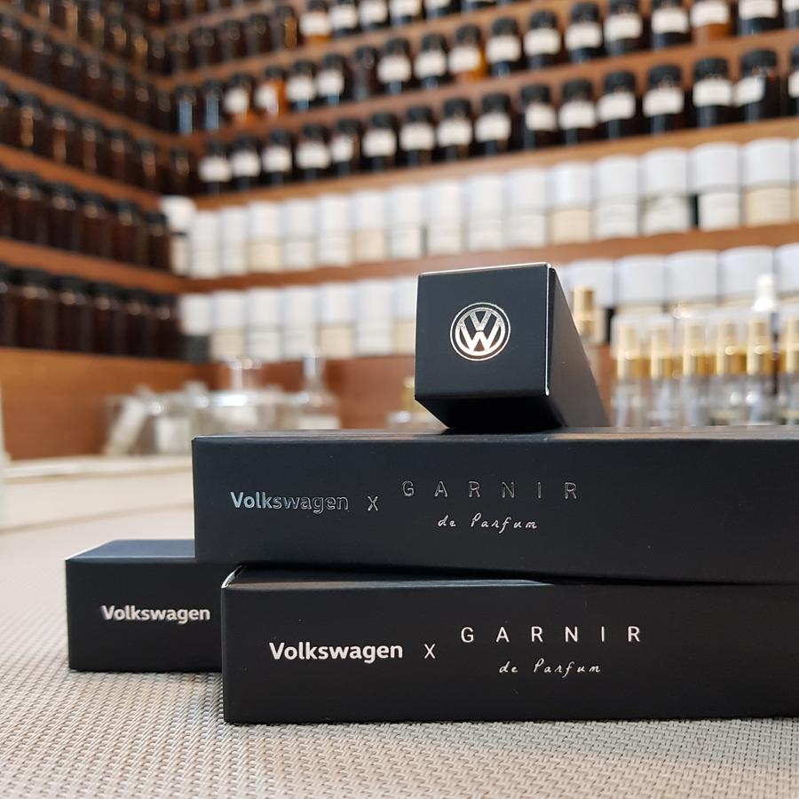
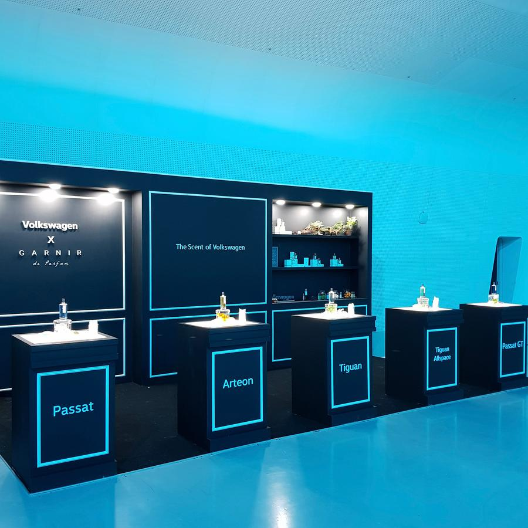
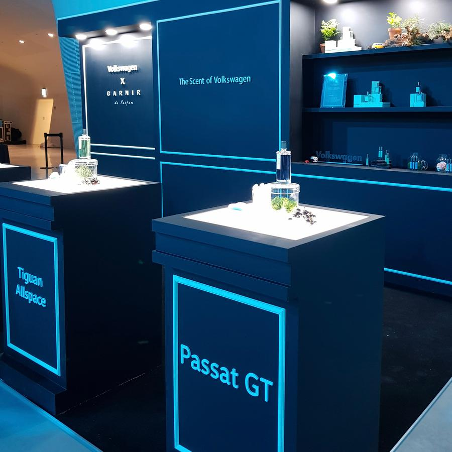
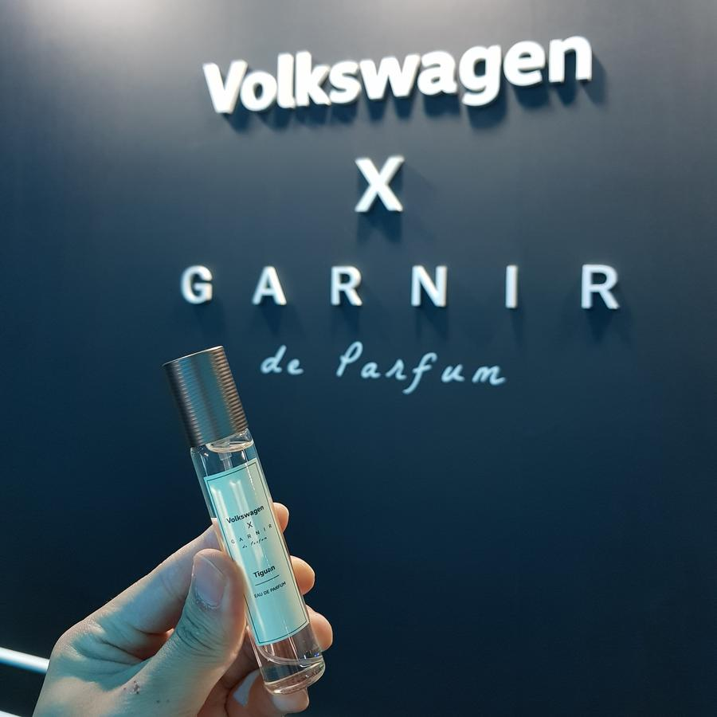
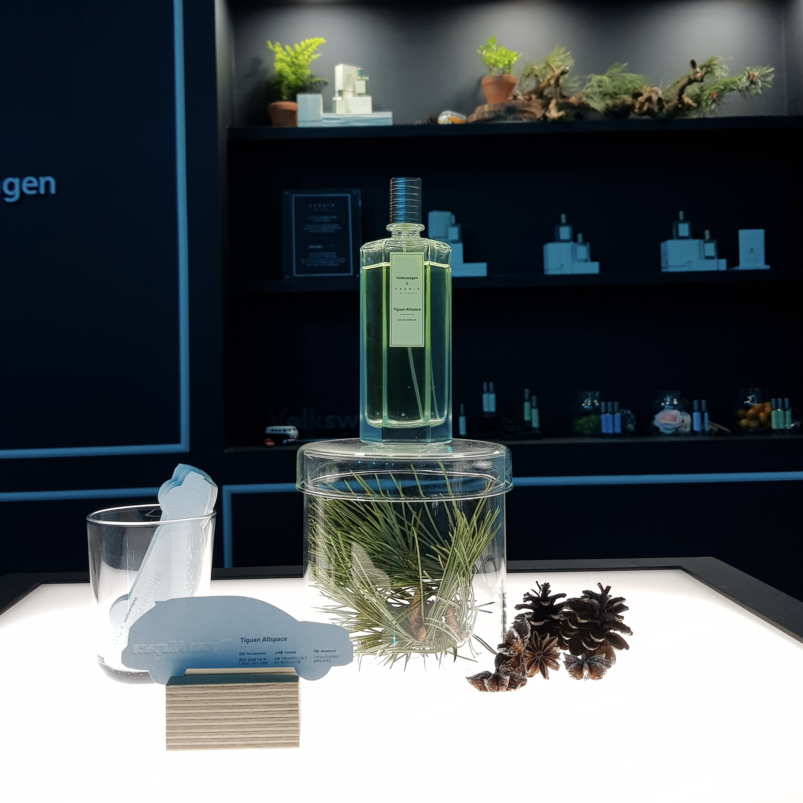

Volkswagen Launching Show, 2018
폭스바겐 코리아는 5종류의 차량을 18년도 동대문 DDP에서새롭게 런칭합니다.
도시적인 세련됨을 강조하는Passat, Passat의 이미지에 가족적인 느낌을 더한 Passat GT, 자연을 누리며 활동적인 느낌의 Tiguan, 웅장함 그리고 넘치는 힘의 Touareg, 우아한 디자인과 첨단 기술의 조화를 이룬 Arteon 이렇게 서로 다른 매력을 지닌 5종류의 차량에 대한 이미지를 향으로 표현하여 향수로 제작하였으며, 2차 생산도 진행하여 차량을 구매하는 고객분들께 제공되었습니다.
도시적인 세련됨을 강조하는Passat, Passat의 이미지에 가족적인 느낌을 더한 Passat GT, 자연을 누리며 활동적인 느낌의 Tiguan, 웅장함 그리고 넘치는 힘의 Touareg, 우아한 디자인과 첨단 기술의 조화를 이룬 Arteon 이렇게 서로 다른 매력을 지닌 5종류의 차량에 대한 이미지를 향으로 표현하여 향수로 제작하였으며, 2차 생산도 진행하여 차량을 구매하는 고객분들께 제공되었습니다.
Volkswagen Korea is launching five new vehicles at Dongdaemun DDP in 2018.
Passat emphasizes urban sophistication, Passat GT adds a family feel, Tigeran enjoys nature and is active, Touareg of grandeur and power, and Arteon combines elegant design and advanced technology.
It was made into perfume by expressing images of five different types of vehicles with different charms, and it was also provided to customers who purchase vehicles through the second production.
Passat emphasizes urban sophistication, Passat GT adds a family feel, Tigeran enjoys nature and is active, Touareg of grandeur and power, and Arteon combines elegant design and advanced technology.
It was made into perfume by expressing images of five different types of vehicles with different charms, and it was also provided to customers who purchase vehicles through the second production.







1 / 8